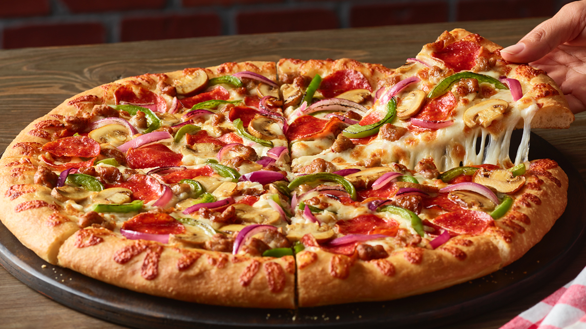

Pizza

Description
For single-serve dinners that reheat quickly, freeze baked lasagna in individual microwavable containers.
Chef's Tip: Go lighter and replace sausage with ground chicken or ground turkey sausage.
Ingredients
- 1 (15 ounce) container ricotta cheese
- 1 (8 ounce) package shredded mozzarella cheese, divided
- 1 (3 ounce) package Parmesan cheese
- 1 egg
- 2 teaspoons Italian seasonin
Steps
- Cook lasagna noodles according to package directions, using shortest cooking time. Drain and rinse with cold water; set aside.
- For sauce, in a large skillet cook sausage and onion over medium heat until sausage is brown, breaking up sausage into uniform pieces. Drain if necessary. Add tomatoes, tomato paste, water, 1/4 cup parsley, garlic, basil, salt, oregano, rosemary, black pepper and crushed red pepper. Bring to a boil; reduce heat. Simmer, covered, 20 minutes.
- Meanwhile, in a medium bowl combine eggs, ricotta, 1/2 cup Parmesan and remaining 1/4 cup parsley.
- Spread 1 cup of the tomato mixture in the bottom of a 9-by-13-inch baking dish. Arrange 3 of the cooked noodles over the sauce. Top with one-third of the ricotta mixture, one-fourth of the mozzarella and 1-1/3 cups of the sauce. Repeat twice. Top with remaining noodles, sauce, mozzarella and remaining1/4 cup Parmesan. Cover tightly with foil.